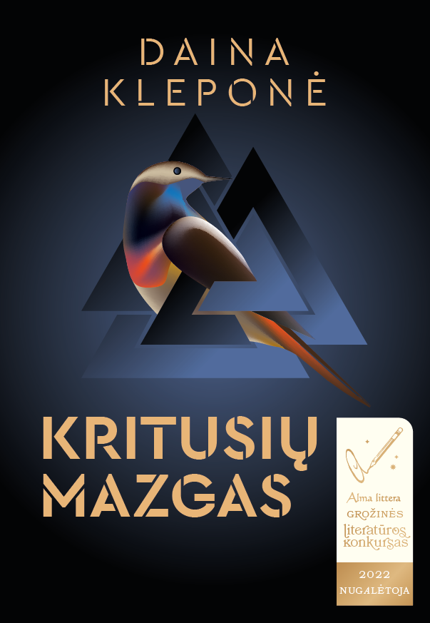
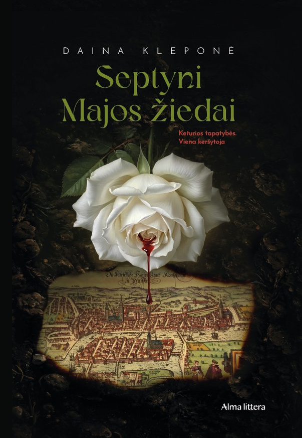
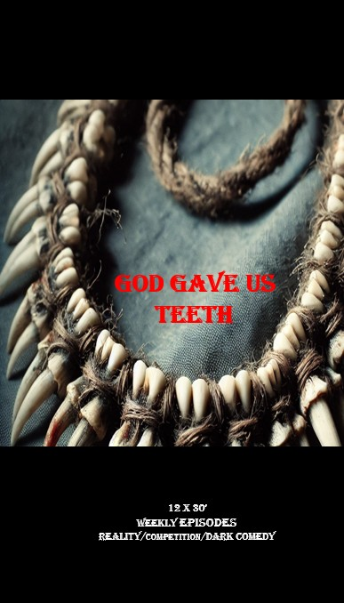

KŪRYBA
|
ROMANAI IR NE TIK

KRITUSIŲ MAZGAS
Kvapą gniaužiantis trileris
Berlyne, 2015-ųjų pabėgėlių krizės metu, žurnalistės nužudymo tyrimas atskleidžia istorinių nusikaltimų, dešiniojo ekstremizmo ir korporacinės korupcijos voratinklį, supindamas dešimtmečius trukusią mirtino godumo istoriją.

SEPTYNI MAJOS ŽIEDAI
Lėtai smilkstantis istorinis kriminalinis trileris
Berlynas, 2017-ieji. Apleistame pramogų parke, kuriame viešpatauja paauglių gaujos, narkotikai ir ginklai, ant suoliuko randamas paliktas kūdikis, suvyniotas į audinį, išsiuvinėtą nežinoma kalba. Lietuvių paauglys, netyčia tapęs scenos liudininku, bando likti nepastebėtas — bet tą pačią naktį netoliese aptinka nužudytą jauną moterį. Detektyvui Johannui Hartogui gilinantis į tyrimą, jis supranta, kad šios mirtys nepaaiškinamos įprasta logika. Atsakymai slypi ne tik tamsiuose Berlyno užkampiuose, bet ir giliai vienos šeimos šaknyse, nusidriekiančiose nuo 1945-ųjų Karaliaučiaus apgulties iki šiuolaikinės Sirijos.

DAVĖ DIEVAS DANTIS
Juodojo humoro komedija / TV realybės šou / Baltijos šalių televizijos formatų inkubatoriaus finalistas
Dvylika apie kaimo gyvenimą nieko nenutuokiančių miestiečių įstringa apleistoje fermoje. Susiskirstę į komandas, jie varžosi dėl išlikimo: augina ir renka maistą, kad įtiktų savo negailestingam šeimininkui – Piktajam Ūkininkui. Pasikliaudami tik savo sumanumu ir dantimis, jie turi pergudrauti vieni kitus.